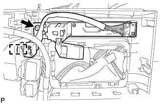
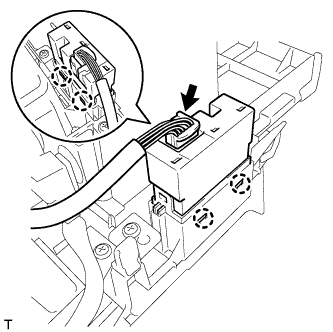

FRONT CONSOLE BOX > DISASSEMBLY |
| 1. REMOVE CONSOLE COMPARTMENT DOOR SUB-ASSEMBLY |
Remove the 6 screws and console compartment door.
| 2. REMOVE REAR CONSOLE BOX HOLDER CUP |
Remove the 2 screws.
Detach the 4 claws and remove the rear console box holder cup and rear upper console panel.
| *1 | Rear Console Box Holder Cup | *2 | Rear Upper Console Panel |
| 3. REMOVE SHIFTING HOLE COVER SUB-ASSEMBLY |
Detach the 7 claws and 2 guides and remove the shifting hole cover.
| 4. REMOVE COMBINATION SWITCH ASSEMBLY |
Remove the 4 screws and combination switch (absorber control switch) from the upper console panel.
| 5. REMOVE SHIFT POSITION INDICATOR |
|  |
Detach the connector clamp.
Remove the screw and shift position indicator from the upper console panel.
| 6. REMOVE REFRESHING SEAT SWITCH |
|  |
Disconnect the connector.
Using a screwdriver, detach the 4 claws and remove the switch.
| 7. REMOVE INSTRUMENT PANEL CUP HOLDER ASSEMBLY |
Slide the cup holder and remove the 2 screws.
Disconnect the connector and detach the 3 clamps.
Remove the 4 screws.
Tilt the instrument panel cup holder as shown in the illustration and pull it out in the direction of the arrow to remove it.